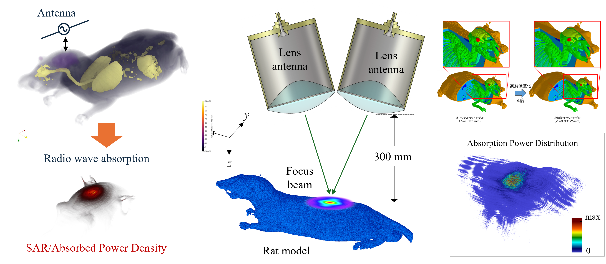

研究課題 (Research Topics)
電波ばく露安全性に関する研究（総務省委託研究）
携帯電話等の普及とともに，ミリ波（MMW: Millimeter Wave）帯電波の導入が予定されており、その利用方法の多様化は今後益々進展するものと思われる。
一方、人体近傍に使用されているミリ波無線デバイスの拡大利用に従って，一般環境でのミリ波電磁界（EMF: Electromagnetic Field）による健康影響に対する懸念が高まっており、ミリ波帯電波ばく露による人体安全性について詳細な検討が求められている。
本研究では、皮膚組織を対象としてミリ波帯電波ばく露の及ぼす生体影響について調査し、ミリ波帯の電波ばく露の安全性に関する国際ガイドラインのエビデンスとなり得る知見を取得することを目的とする。

トンネル発破の⾃動化・無⼈化に関する研究（戦略的イノベーション創造プログラム）：
共同研究機関：電通大（代表）藤井研、李研、日油、施工総研、前田建設、大成建設、熊谷組（分担）

共同研究機関 (Joint Research Groups)
- 電気通信大学 先端ワイヤレス・コミュニケーション研究センター (AWCC, UEC, Japan)
- 富山大学 本田研究室 (Communication System Lab, University of Toyama, Japan)
- 国立研究開発法人情報通信研究機構 電磁波研究所電磁環境研究室 (EMC Lab, NICT, Japan)
- 名古屋工業大学 平田・小寺研究室 (Hirata & Kodera Lab, NiTech, Japan)
- 北海道大学 日景研究室 (Wireless Technology and EMC Research Lab, Hokkaido University, Japan)
- フランス・レンヌ大学 生体電磁研究室 (Bioelectromagnetics Lab, University of Rennes, France)
- デンマーク・オールボー大学 アンテナ研究室 (Antenna Lab, Aalborg University, Denmark)